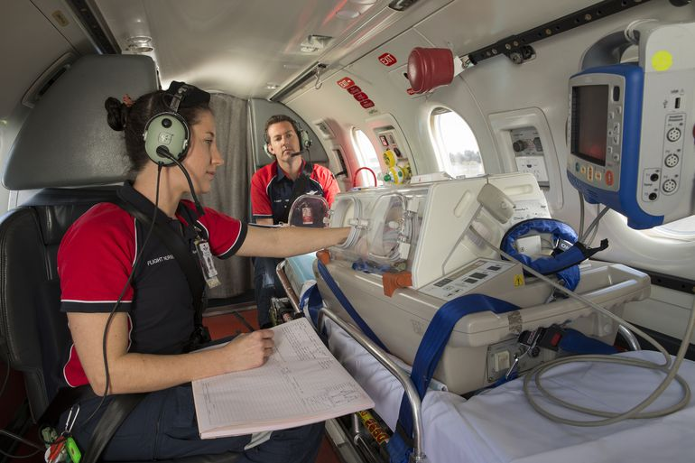
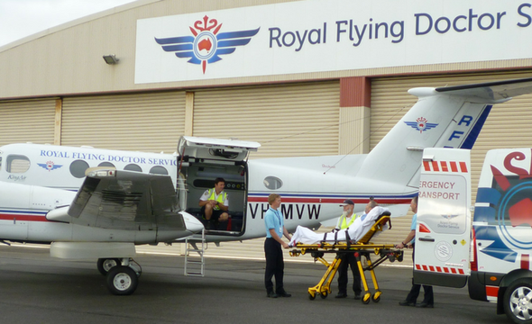

Our Services
Aeromedical Retrieval
 One of the primary services the RFDS provide is Emergency Aeromedical evacuations. This involves rescue operations of seriourly ill or injured individuals througout rural and remote australia.
 The RFDS performs almost 40,000 rescues a year delivering 24 hour emergency service. The RFDS aims to provide assurance to Australians living in rural or remote areas.
Inter-hospital Transfer
The inter-hospital transfer service the RFDS provides is a vital part of the service. It allows those living in rural Australia to recieve better medical care than they would at a regional hospital.
The service can also be used by patiets needing specialised care that can only be recieved in major city hospitals. Transport by the RFDS reduces travel time by hours than if the patiet was transported by road, which can often be crucial for those in critical conditions.
Click here for other services the RFDS provide.